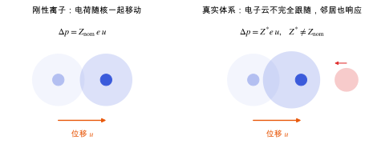

位置、路径与目录
介电张量与玻恩有效电荷
概念节点领域：响应与张量性质研究线：压电与响应计算v0.2 · 2026-11-10
草稿已有正文，但来源和推导还没有核查完，不能当作定论。
电场与原子位移之间的耦合：介电响应和玻恩有效电荷描述什么，怎样计算。
把一个原子挪动一点，晶体的宏观极化会变多少？如果离子是带固定电荷的刚性小球，答案就是“名义电荷 × 位移”。真实体系里电子云不会刚性跟着原子走，周围原子的电子也会重新分布，所以实际的偶极变化可以比名义电荷大很多，方向也可以不同。这个“实际的”比例就是玻恩有效电荷 (Born effective charge) Z^{*}。
Z^{*} 是电场和原子运动之间的耦合常数，从两个方向读都一样：原子位移引起多少极化；电场在原子上产生多大的力。所以它同时出现在：
- 介电响应的离子部分（电场推动原子，原子位移再贡献极化）；
- 压电响应的内应变项（应变推动原子，原子位移再贡献极化，见 压电张量）。

左：刚性离子模型，偶极变化等于名义电荷乘位移。右：真实体系中电子云滞后、邻近原子响应，有效电荷 Z* 与名义电荷不同。
| 符号 | 是什么 | 图里对应 |
|---|
| u | 一个原子的位移 | 橙色箭头 |
| Z_{\mathrm{nom}} | 名义（形式）电荷 | 左图：浅色圆是原位置，深色圆是新位置，电子云整体跟随 |
| Z^{*} | 玻恩有效电荷 | 右图：电子云（浅蓝）没完全跟上，邻近原子（红）也有响应 |
| \Delta p | 晶胞偶极变化 | 两图上方公式 |
Z^{*} 对每个原子是一个 3\times 3 张量，一般不对称。
两种介电常数
上式和 从能量到结构与响应 中的 u^{*} = K^{-1}f 是同一个结构：电场给原子的力是 Z^{*}\mathcal{E}，位移由力常数的逆给出，再乘 Z^{*} 回到极化。分母里的 \omega_m^{2} 就是力常数矩阵的本征值，所以低频而又带电的模式主导离子介电响应，也最容易放大误差。
- VASP：
LEPSILON = .TRUE. 用微扰方法计算 \varepsilon^{\infty}、玻恩电荷和夹持离子压电张量 [VASP Wiki: LEPSILON]；配合 IBRION = 7 或 8 还会给出离子对介电张量的贡献。具体能和哪些设置组合（例如对泛函、自旋的限制）以文档为准。 - β-甘氨酸：两性离子 \mathrm{NH_3^{+}}、\mathrm{COO^{-}} 上的原子预计有较大的 Z^{*}。它们和氢键网络中的软模式一起，决定内应变项的大小。哪个原子贡献最大，应从实际计算的 Z^{*} 和模式分解读出，这里不预设。
- 机器学习势：通常的 MACE 势只拟合能量和力，不给 Z^{*}，所以压电的离子项需要 DFT 的 Z^{*}，或者另外训练预测 Z^{*} 的模型（见 机器学习势中的长程静电与电场响应）。
- 求和规则偏离大：通常说明 k 点或截断能不够，或者自洽不够紧（
EDIFF）。 - \varepsilon^{\infty} 与 \varepsilon^{0} 混用：和实验比较时，要看实验测的是光频还是低频介电常数。
- 局域场效应：在 DFT 中是否包含局域场效应，会改变 \varepsilon^{\infty} 的数值；VASP 的设置要看清楚是否包含交换相关的局域场贡献。
- 金属或带隙很小：Z^{*} 和介电张量对小带隙体系不再有通常的意义；半局域泛函低估带隙，会让 \varepsilon^{\infty} 偏大。
相关条目从能量到结构与响应
参考资料
论文Gonze & Lee 1997
X. Gonze, C. Lee, Dynamical matrices, Born effective charges, dielectric permittivity tensors, and interatomic force constants from density-functional perturbation theory, Phys. Rev. B 55, 10355 (1997)
位置：玻恩有效电荷、ε∞ 与 ε0 的定义；声学求和规则；模式分解
尚未实际查阅，目前只是拟查阅书目
论文Baroni 2001
S. Baroni, S. de Gironcoli, A. Dal Corso, P. Giannozzi, Phonons and related crystal properties from density-functional perturbation theory, Rev. Mod. Phys. 73, 515 (2001)
位置：能量对原子位移、应变和电场的二阶导数；与有限差分的关系
尚未实际查阅，目前只是拟查阅书目
官方文档VASP Wiki: LEPSILON
VASP Wiki, LEPSILON（线性响应计算介电与压电张量）
版本：在线文档，查阅时记录日期
尚未实际查阅，目前只是拟查阅书目
论文雷达里的相关论文
按关键词匹配，最近的在前；点开在雷达里阅读。
关联与核验
核验与修订
暂无核验记录。
修订记录
- v0.22026-11-10初稿正文：Z* 定义与求和规则、ε∞ 与 ε0、模式分解、VASP 对应与常见坑；配图 1 张
发现问题
在 GitHub 上公开提交纠错，会附上节点编号和版本，不含你的笔记。
提交纠错